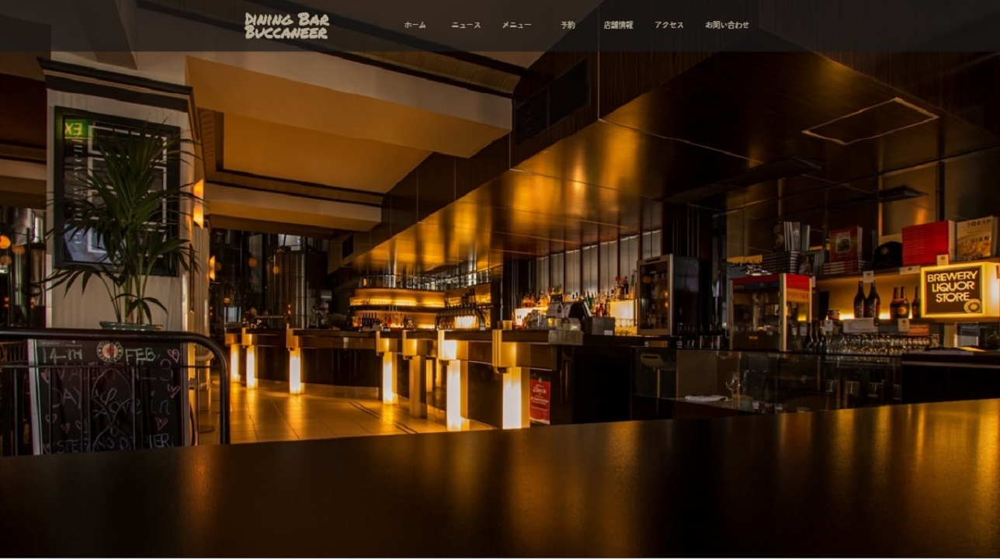
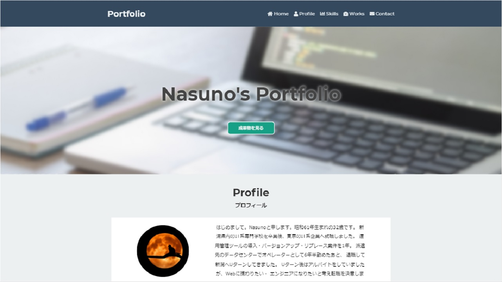

ダイニングバーのWebサイト
仮想のダイニングバーのWebサイト制作を依頼された場合を想定して、
サイトを制作しました。
レスポンシブデザインに対応しつつ、事前に考えたワイヤーフレーム
に沿うように制作するのに苦労しました。
おおまかにサイト制作の流れを知る事が出来ました。
また、レスポンシブデザインのサイトをBootstrap等のフレームワークを
使用せずに制作する経験が得られました。
※サイト制作の流れをGitHubのREADMEに記載しました。
READMEはGitHubのリンクを開いた後、下にページをスクロールすると
見る事が出来ます。

| 期間 |
- |
| 種類 |
Webサイト(仮想店舗) |
- HTML
- CSS
- JavaScript
- Git
- GitHub
ポートフォリオ紹介サイト
本サイトです。
過去に作成してきた成果物を紹介する為に制作しました。
随時更新を続けています。
書籍等で学習した内容を反映させたりしています。
現在のサイトは下記を意識して制作しています。CSS設計については、
まだ詰めが甘いと感じています。(現状、CSS設計風味くらい?)
- レスポンシブ
- モバイルファースト
- CSS設計（OOCSS, BEM, SMACSS）

| 期間 |
2019/03/30 ~ |
| 種類 |
Webサイト(ポートフォリオ紹介サイト) |
- HTML
- CSS
- JavaScript
- Git
- GitHub
ブログアプリ
プログラミングを独学で学んだあと、最初に作成したポートフォリオです。
画像付きの記事を投稿できるブログアプリを作成しました。
開発環境の構築、フロント部分の作成、データベースの設計・構築、
デプロイ(Heroku)についての知識習得等に苦労しました。
ポートフォリオの作成を通じて、Webアプリケーションのおおまかな仕組み
を知ることが出来ました。
また、自身に足りない知識・経験が沢山ある事に気付けました。
※初回アクセス時、サイトを開くまでに時間が掛かります。

| 期間 |
- |
| 種類 |
Webアプリ(ブログ) |
- Ruby on Rails
- Bootstrap
- Git
- GitHub
- Heroku